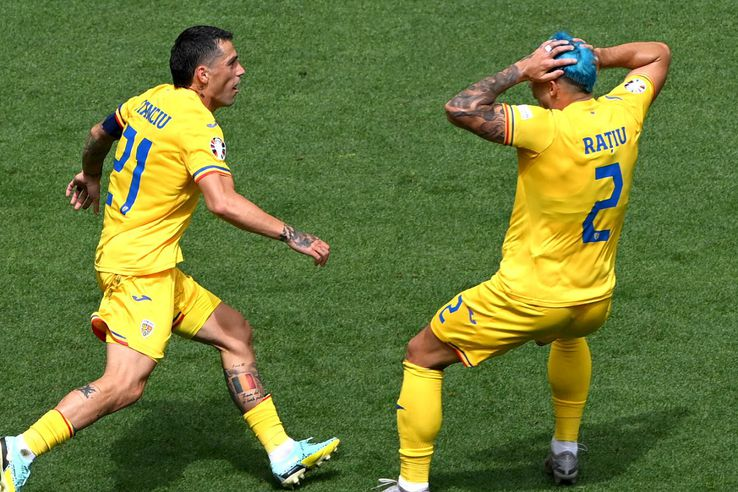

Fii activ! Explorează Sportul!
Sportul nu doar că îmbunătățește sănătatea fizică, dar ne învață lecții valoroase despre disciplină, munca în echipă și perseverență. Această secțiune te va ghida prin diferite sporturi și activități fizice care sunt esențiale pentru o viață activă și sănătoasă. Vei învăța despre sporturile populare, beneficii fizice și mentale, și resurse pentru a-ți îmbunătăți abilitățile sportive. Sportul este o modalitate excelentă de a socializa și de a te dezvolta ca individ.
